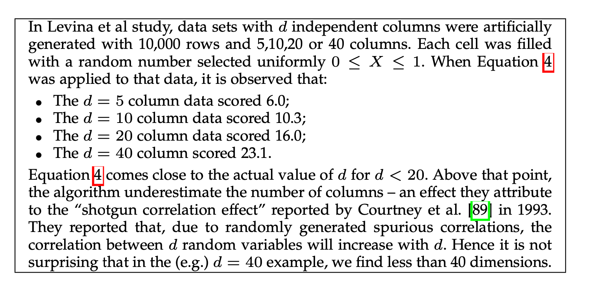
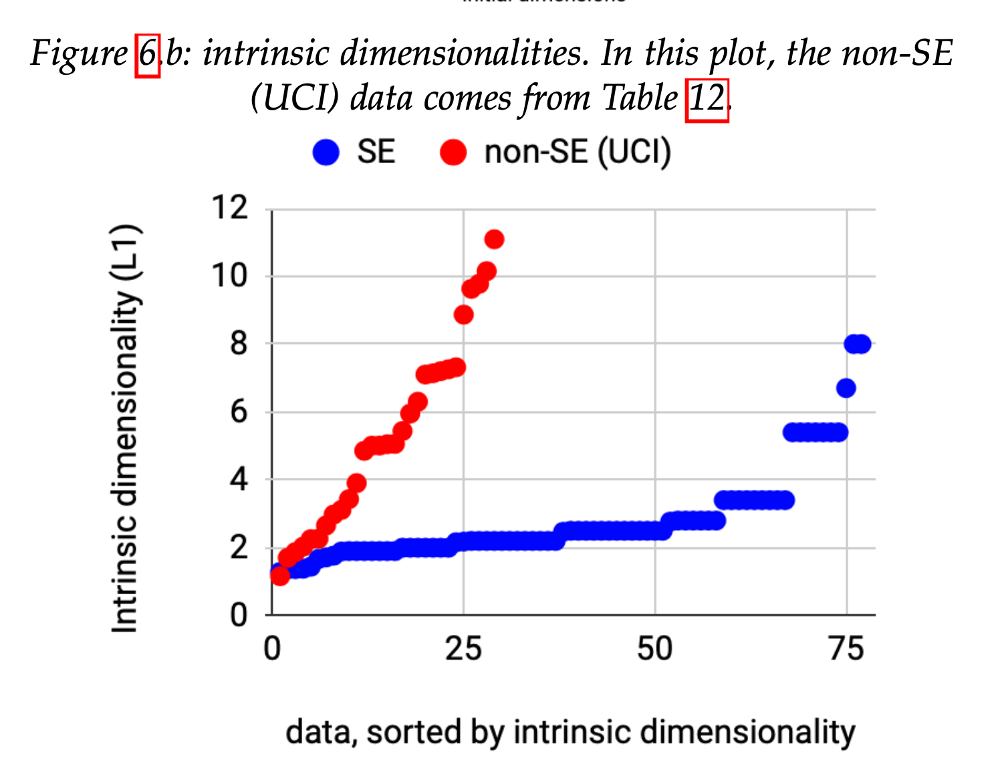
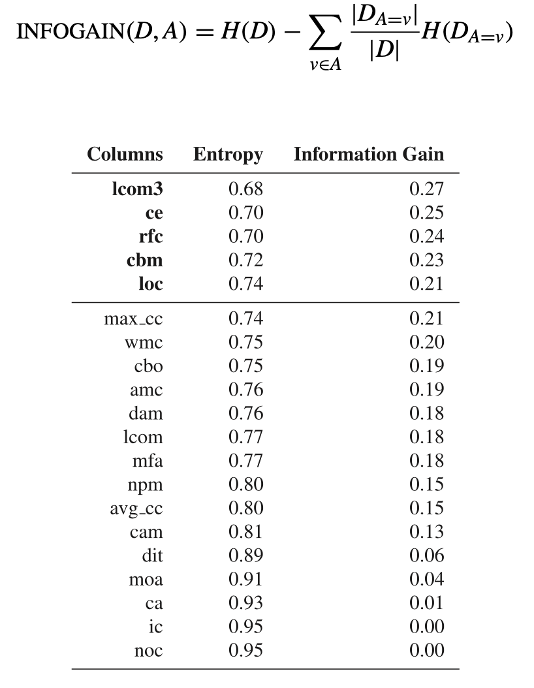

Data Exploration
(A lot of this material is from R for Data Science, a freely available book)

Understanding the Data
One of the first tasks is to better understand the data. We looked at that in the Bayesian context from the epistemological and ontological perspectives: how we think the data were created, and what properties exist in our data.
Often that means background reading, e.g., a literature review or domain modeling. What are your intuitions about how the data would be generated, e.g., for job application information?
Loading Data
Next, take the data and get it loaded into R or Jupyter. My favourite toolset is the Tidyverse, a set of libraries and philosophies for manipulating R data frames.
Loading data is initially easy but quickly becomes a major challenge as data gets larger and more complex. A non-trivial amount of effort can be spent wrangling data into the correct format. A big part of TidyR is to get the data into a “shape” that is easy to work with.
Example Dataset
Let us consider the following datasets: http://promise.site.uottawa.ca/SERepository/datasets-page.html. They are mostly in a common data exchange format called ARFF.
Tidy Data Principles
Tidy Data:
- Each variable must have its own column.
- Each observation must have its own row.
- Each value must have its own cell.
Factors: factors are categorical data, possibly ordered, like “letter grade” (ordered) or country name.
Let’s say we are interested in how well Halstead complexity v(g) predicts defects.
Filtering and Aggregating
In Tidyverse language, use the TidyVerse chaining operator %>% (pipe) to group operations on dataframes/tibbles.
Useful operations include mutate, filter, summarize/group_by. I find these operations extremely powerful for manipulating the data. You can think of them as data frame analogues for SQL query statements.
Data Wrangling
I suggest you load your data into a data frame and then chain filters into it, rather than “fixing” the dataset in a separate step. That way you get to see all the data wrangling in one place. It can be really easy to miss a step and end up with outliers that are included, aggregations that don’t make sense, etc.
# A tibble: 2 × 2
defects n
<fct> <int>
1 false 8779
2 true 2106
# A tibble: 8 × 1
`v(g)`
<dbl>
1 402
2 286
3 127
4 207
5 268
6 263
7 128
8 470

Probability Distributions
The ggplot() library in R (and MatPlotLib in Python) are best in class visualization approaches with a vast amount of options and when combined with the filtering/aggregating, can do almost anything.
Use ggplot to explore your data and dimensionality as we showed in the R walkthru. Don’t feel bad about using SO or references; I did preparing this tutorial!
Visualization can help understand what is happening. Descriptive stats such as mean, median, variance can give some numeric information conditional on the distribution involved. These are typically generalized as location and dispersion, e.g., where the big clump of data lives in the normal, and how spread out it is.
Binning and Summarizing
# A tibble: 4 × 3
bin count med
<fct> <int> <dbl>
1 small 10876 23
2 medium 6 1262.
3 large 2 1853
4 giant 1 3442
Correlation
Thinking back to our causal models, some of the variables are correlated, possibly causally. We should look for correlation because it is a great source of confusion; either implying some effect that is really due to a hidden mediator, or making us run extra analyses that are all based on the same underlying mechanism.
Furthermore, correlation - aka multi-collinearity - is something we try to remove in regression analysis as it makes the model overly sensitive and possibly inaccurate.
Correlation Analysis
Keep in mind this can be a problem with artificial variables too (the ones made up of other variables).
We can use QQ plots (quantile-quantile) to examine fit to a distribution. The distribution’s known shape is the central line and the actual data fit is the dots.
We can also use
as a rough approximation of correlation. Remember to plot the data first, to see what the numbers are telling you.
Dimensionality Reduction
One challenge with datasets with lots of dimensions (variables/features/columns) is that running algorithms gets worse. For example, if we have an algoritym like nearest neighbours with a distance function, the distance function will perform very poorly in high-dimension spaces (the curse of dimensionality).
The good news is we believe, empirically, that most SE data has low inherent dimensionality. This is important since, as Fisher points out, > Further advances in advanced software analytics will be stunted unless we can tame their associated CPU costs.
Compare SE datasets to UCI
- SE data often binary labels and imbalanced
- SE data have lower intrinsic dimensionality
 
See 10.1109/TSE.2021.3073242
So What To Do?
- Do less parameter tuning: the data are simpler, so you do not need thousands of trials. But as data has more dimensionality, the SE specific learners will be less effective.
- Share less data: drop the individual data points and look at representatives or clusters (e.g. the centroid).
- Reduce the excess dimensionality of SE datasets
Principle Components Analysis
In some cases you can just do a correlation analysis and chuck predictors that are correlated. For example, flag each column with USE? and explore how well each one helps the AIC score. Problem: exponential! Better: do a search through feature space. E.g. with PEEKING2:

PCA Search Algorithm
PEEKING2 is a search algorithm that relies on a variant of PCA, which tries to find the principle components which capture the most variance in the data
Importance of components:
PC1 PC2 PC3 PC4 PC5 PC6 PC7
Standard deviation 2.5055 1.0327 1.0158 0.83045 0.63651 0.42912 0.3962
Proportion of Variance 0.6278 0.1066 0.1032 0.06896 0.04051 0.01841 0.0157
Cumulative Proportion 0.6278 0.7344 0.8376 0.90657 0.94708 0.96550 0.9812
PC8 PC9 PC10
Standard deviation 0.33102 0.27443 0.05608
Proportion of Variance 0.01096 0.00753 0.00031
Cumulative Proportion 0.99215 0.99969 1.00000
PCA Visualization
And we can see that PC1 contains 63% of the variance, PC2 contains 11%, etc. Thus the variance in our 10 columns has been reduced to 3-4 principle components.

This plot shows us the first 2 components with the associated labels. We don’t see any obvious separation here.
Unsupervised Stuff
We have been working on problems where we have columns X and labels Y. But what if we only have X? This is 99% of the adata in the world, of course, annoying CAPTCHAs notwithstanding.
Unsupervised learning is about finding relationships between the Xs (sort of like PCA was doing). One simple approach is to ask, can I cluster my data points into (N-dimensional) groups, such that a point \(m\) is in cluster \(J\) iff there is no closer cluster? This assumes “distance” in vector space means similarity in the real world, of course.
One useful library for doing this, aside from the builtin libraries in Scikit-learn and R, is Weka.
Supervised Stuff
Now let’s say we have Y (the labels / ground truth) and want to partition our data so we maximize the accuracy with which we label the instances.
There’s a long list of approaches to this problem (so-called shallow learning): decision trees, support vector machines, etc.
I like Weka for exploration but for bigger datasets and more extensive experimentation, the command line or a notebook (hence usually Python) is best. Aside: SAVE YOUR EXPERIMENTS! Always record the steps and params you chose for a given exploration. It will save you headaches later.
Confusion Matrices
If we have two labels, True and False, then our task is to correctly predict the label for a given instance. When we do that on all the data instances, we get a set of correctly labeled instances (true positives and true negatives) and a set of incorrectly labeled instances (false positives/negatives). Our general task is to create a
Confusion Matrix Example
% -- Defect detectors can be assessed according to the following measures:
%
% module actually has defects
% +-------------+------------+
% | no | yes |
% +-----+-------------+------------+
% classifier predicts no defects | no | a | b |
% +-----+-------------+------------+
% classifier predicts some defects | yes | c | d |
% +-----+-------------+------------+
%
% accuracy = acc = (a+d)/(a+b+c+d
% probability of detection = pd = recall = d/(b+d)
% probability of false alarm = pf = c/(a+c)
% precision = prec = d/(c+d)
% effort = amount of code selected by detector
% = (c.LOC + d.LOC)/(Total LOC)
%
% Ideally, detectors have high PDs, low PFs, and low
% effort. This ideal state rarely happens:
Metrics and Baselines
My favorite, most comprehensive guide is from Wikipedia
Some other common metrics include:
- ROC - AUC (and the curve itself)
- Matthews Correlation Coefficient
These can all be implemented using library calls. The ROC curve metric is pretty useful: https://towardsdatascience.com/understanding-auc-roc-curve-68b2303cc9c5
The key is to understand what you are aiming to optimize. In some cases, like assessing ambiguous requirements, 100% recall is better than improved precision.
Another key is to have a valid baseline. This might be ZeroR, the classifier that predicts the majority class; a random classifier; or the current SOTA (state of the art).